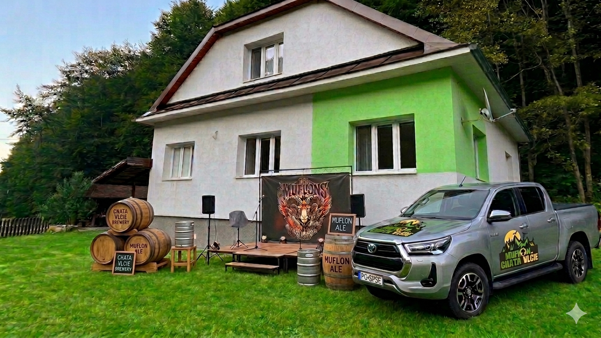

Najnovšie správy, akcie a výčiny z nášho kolektívu.
Klasika, ktorá sa koná každý rok, tento raz s vysokou účasťou.
Coška vyrucilo z miešačky — prvý track letnej série je tu. Počúvajte a hodnoťte.
Spontánne stretnutie, ktoré sa natiahlo do rána. Prečo sme takí? Nikto nevie.
Muflon Production je partia kamarátov, ktorú spojilo obdobie strávené na internáte pri SPŠE v Prešove. Práve tam sme spoločne nasávali elektrotechnické vedomosti a zároveň si krátili čas rôznymi – niekedy zmysluplnými, inokedy úplne bláznivými – aktivitami, často balansujúcimi na hrane domového poriadku.
Toto jedinečné prostredie z nás vytvorilo nerozlučný kolektív, ktorý si svoje priateľstvo udržiava dodnes. Už niekoľko rokov sa pravidelne stretávame raz ročne na chate v Livovskej Hute, kde si pripomíname staré časy a vytvárame nové spomienky.
Ako raz trefne poznamenal jeden z nás: „Čo SPŠE spojila, nikto nerozpojí."
Názov Muflon Production vznikol úplne spontánne, tak ako väčšina našich najlepších nápadov. Slovo „Muflon" už predtým používalo zopár členov partie ako svojský pokrik – legendárne „Muuuflon!", ktoré sa ozývalo internátom pri rôznych príležitostiach.
Zlomový moment prišiel počas natáčania videa s názvom „Merak in the flejms", kde sme na WC symbolicky „upaľovali" pokazený multimeter. Keď sa kamera zapla, Patrik spontánne zakričal „Muflon!" a Tono hneď na to doplnil „Production!". Tento neplánovaný moment sa stal úvodom videa – a zároveň aj zrodom názvu našej legendárnej partie.
Odvtedy už bolo jasné, že Muflon Production nie je len pokrik, ale oficiálna značka všetkých našich výtvorov a zážitkov.

Príbehy, na ktoré sa nezabúda. Aspoň nie hneď.
Keď oficiálne kanály nestačia, mufloni si nájdu vlastnú cestu. Internátny rozhlas sa stal na chvíľu naším. Správa sa šírila rýchlejšie ako reakcia vedenia.
Klasický letný deň, ktorý prerástol do niečoho väčšieho. Nikto nebol suchý, nikto neľutoval. Niektoré legendy začínajú práve takto.
Bol plán. Bol kanál. Boli nápady. Čo presne sa stalo potom — to je téma na dlhý večer pri ohníku.
Každý výjazd má svoju históriu. Tu sú všetky.
Kontakt a naše legendárne videjká.